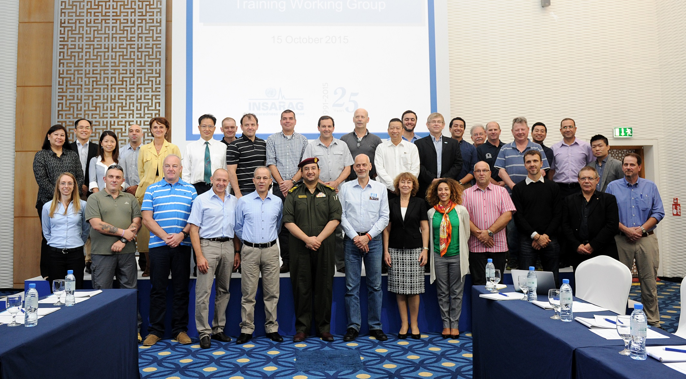

The INSARAG Guidelines Review Group (GRG) met in Abu Dhabi, United Arab Emirates (UAE), on 14-15 October 2015. The list of participants can be found in Annex A.
Chair of TWG, Mr. David Sochor
{tabulizer:include style[gr.alterora.elemental_2_grey.css] id[tab_F6yW0U1VnR]}
| Name | Country | Region | Position |
| David Sochor | Switzerland | AEME | A/Chair on behalf of Manuel Bessler |
| John Denny | Australia | Asia-Pacific | Member |
| Sebastian Mocarquer | Chile | Americas | Member |
| Peter Wolff | Germany | AEME | Member |
| Arjan Stam | Netherlands | AEME | Member |
| Paul Burns | New Zealand | Asia-Pacific | Member |
| Dewey Perks | USA | Americas | Member |
| Marwan Bader Alsmeiat | Jordan | AEME | Member |
| Ling Young Ern | Singapore | Asia-Pacific | Member |
| Tsukasa Katsube | Japan | Asia-Pacific | Member |
This meeting was hosted by the Ministry of Interior of the Government of the United Arab Emirates and co-organised by the INSARAG Secretariat.
The meeting was opened by Mr. Winston Chang, Humanitarian Affairs Officer, FCSS-OCHA and Mr. David Sochor, Chief of Rapid Response Federal Department of Foreign Affairs, Swiss Agency for Development and Cooperation and Chief of Staff to the Chairman GRG, Ambassador Manuel Bessler.
Guidelines Review Group Meeting Chairman's Summary
Presentation
